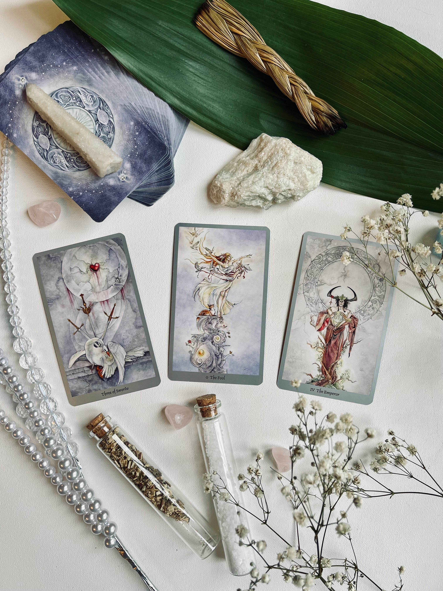
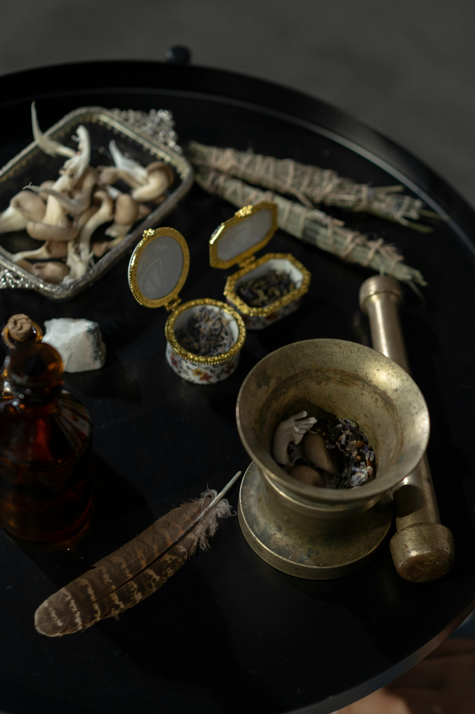

Witches have turned to crystals for their magical properties for centuries. From wearing them for their protective qualities to using them in spells and rituals, witchcraft crystals are a fantastic way to amplify your magic.
Tarot is a centuries-old system of divination that combines symbolism and intuition to offer insights into the past, present, and future. Tarot readings are done through a 78-card deck and are usually performed by a skilled practitioner (although one doesn’t have to be a professional to give a tarot reading!). Tarot readers draw and then interpret cards in response to a seeker's questions or concerns. Each card in the deck carries its own unique symbolism and meaning; for example, The Fool can mean innocence and new beginnings while The Magician can represent desire. While some view tarot as a mystical or supernatural tool, others see it as a reflection of the reader’s subconscious and the seeker's own thoughts and emotions.
Herbs are one of the witches most valuable tolls when working magic. Each herb has a selection of specific energies/correspondences connected with it. By tapping into this energy the everyday witch has a powerful and enchanting item at the end of her finger tips. Whether someone just starting out or the experienced practitioner herbs are the chosen magicak tool of many.
Witch Balls measure up to 10 inches in diameter, and are occasionally decorated in enamelled stripes and swirls or varying colors. Some are mirrored for use as convex mirrors. Crystal gazers sometimes claimed they used balls in which the spirits of dead souls had been banished. Therefore, the seer was thought to be dealing with spirits. Hollow glass balls have been suspended in the windows of homes for centuries to ward off evil spirits. Legends say that evil spirits are attracted to the beauty of the ball, and upon touching its surface they are pulled inside and become forever trapped within the glittering web, thus protecting the home from any harm.
© 2024 Witchy Thing